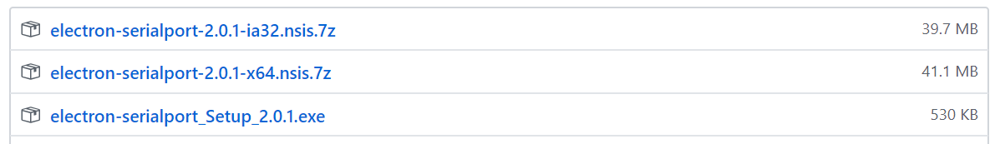
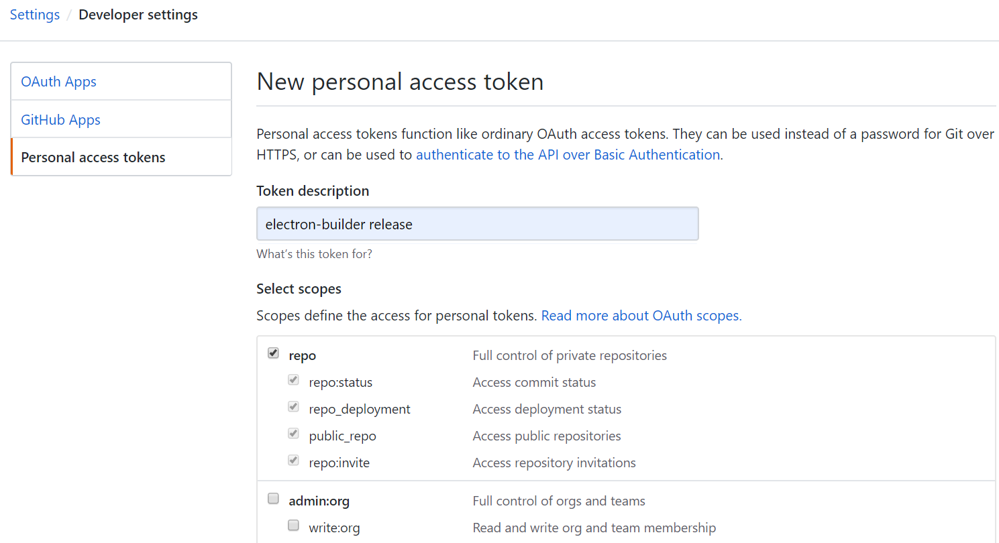
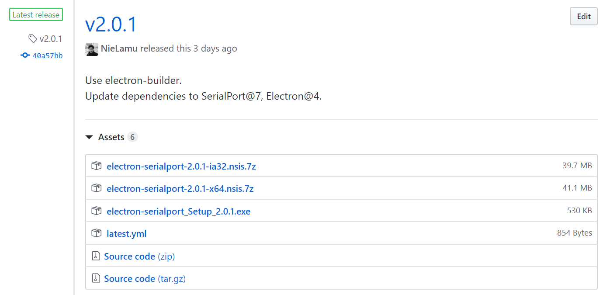

使用Electron开发跨平台项目，将其打包成各平台可执行或可安装应用，一般有两种模块可以完成，即electron-packager和electron-builder，建议使用electron-builder。
electron-packager
electron-packager的可配置项比较少，可打包类型也比较少。
electron-builder
electron-builder配置项非常丰富，具体使用可查阅官方文档。
打包到Windows
nsis-web包类型(recommended)
以目标平台为Windows为例，nsis-web形式包含一个几百kb的通用安装包(.exe)和x64、x86架构下相应的软件包(.7z)。
如果安装包托管在网站上，分发时只需要分发exe文件。这样不仅无需考虑用户操作系统架构，而且安装包比32位+64位减少了一半的大小。

package.json配置
配置scripts:
"scripts": {
"release": "electron-builder"
}
electron-builder后的参数参照CLI Building参数。
如果安装包要自动上传到GitHub上，则script的必须命名为release。
配置build参数：
"build": {
"nsisWeb": {
"artifactName": "${productName}_Setup_${version}.${ext}",
"oneClick": false,
"perMachine": false,
"allowToChangeInstallationDirectory": true
},
"win": {
"target": [
{
"target": "nsis-web",
"arch": ["x64", "ia32"]
}
]
},
"publish": {
"provider": "github",
"repo": "electron-app",
"owner": "luffySAMA",
"releaseType": "release"
}
}
其中nsisWeb和win.target.nsis-web字段指定要打包为nsisWeb类型。
publish字段，如果托管到GitHub，则
- provider: “github”
- repo: 托管的repository
- owner: 托管的GitHub账户用户名
- releaseType: “release”
如果托管到其它服务器，则按照文档填写，比如自己的服务器，则
- provider: “generic”
- url: “https://example.com/latest/"
其余字段按需配置。
创建GH_TOKEN
在GitHub - Settings - Developer settings - Personal access tokens - Generate new token创建一个新的token, 勾选scopes中的repo，生成并保存token到本地的可靠文件中。

打包及发布
参见recommended-github-releases-workflow
- 在GitHub上项目中新建一个release的draft，
Tag version以v开头并与项目package.json中的version一致。Release title按需填写。例如，如果package.json中version是1.0，Tag version就是v1.0. - 运行
GH_TOKEN=xxxxxxxxxxxxxxx npm run release.
此后安装包将自动发布到GitHub项目的release。

Refer:
[1]electron-builder打包见解
[2]Electron Nsis Web 安装包配置方法